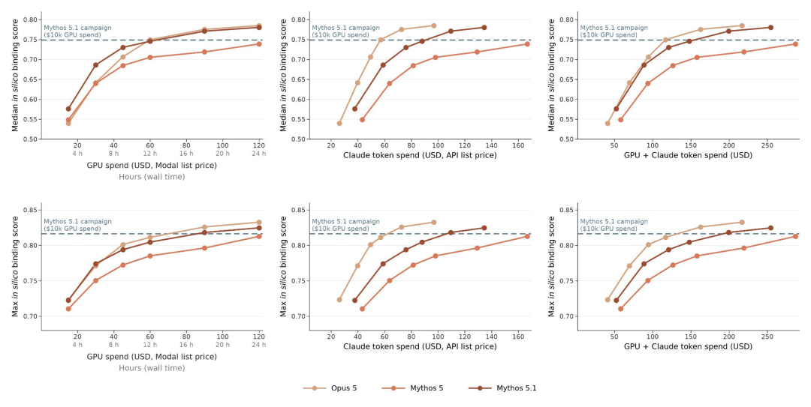
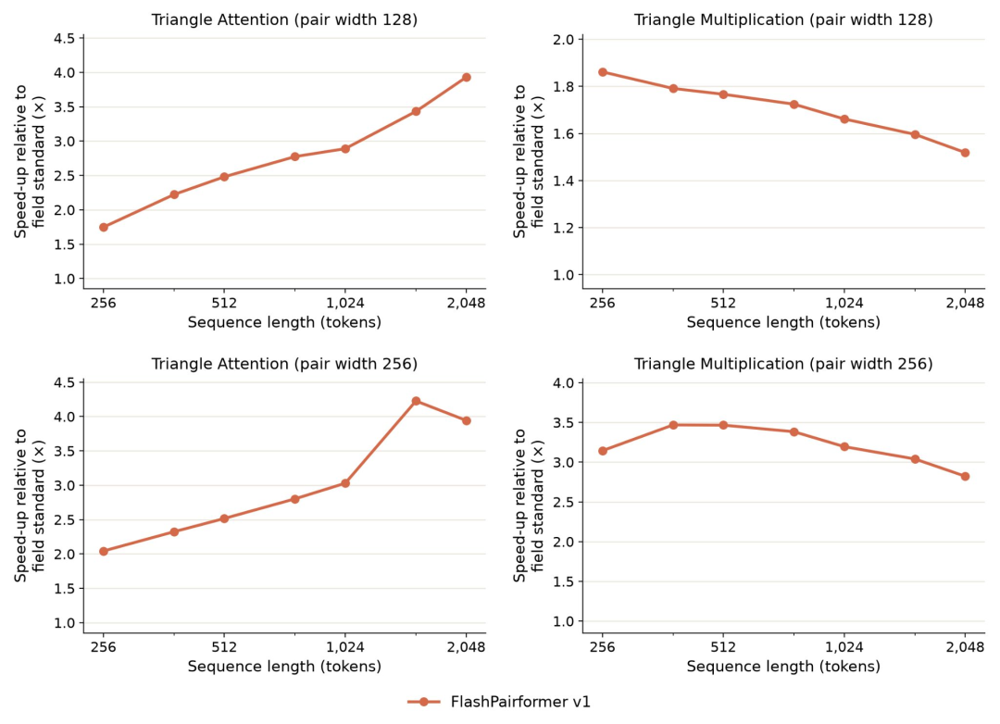
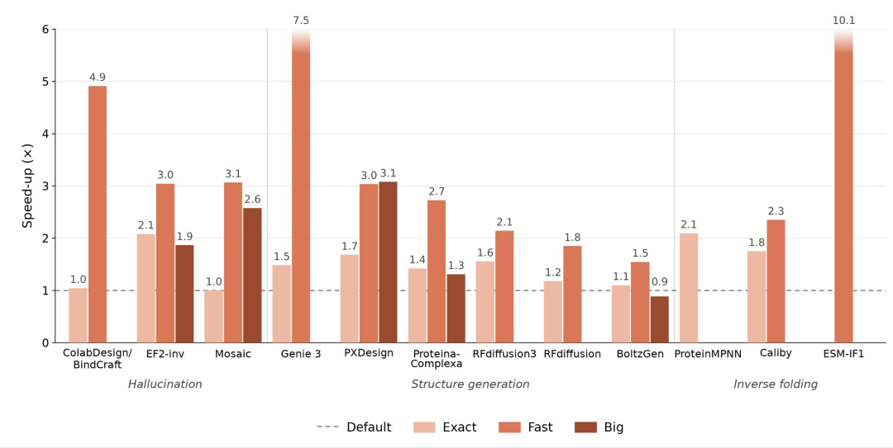
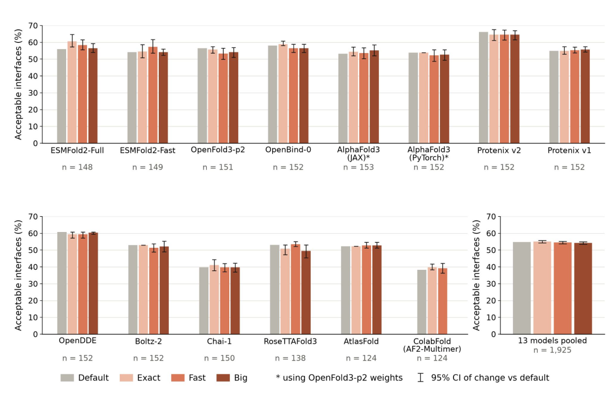
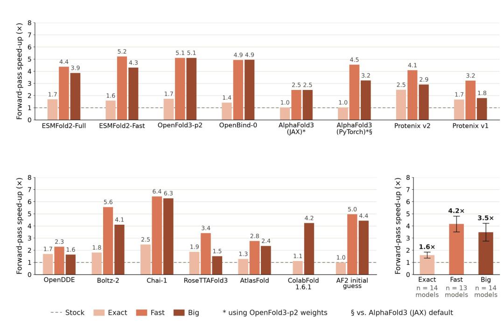
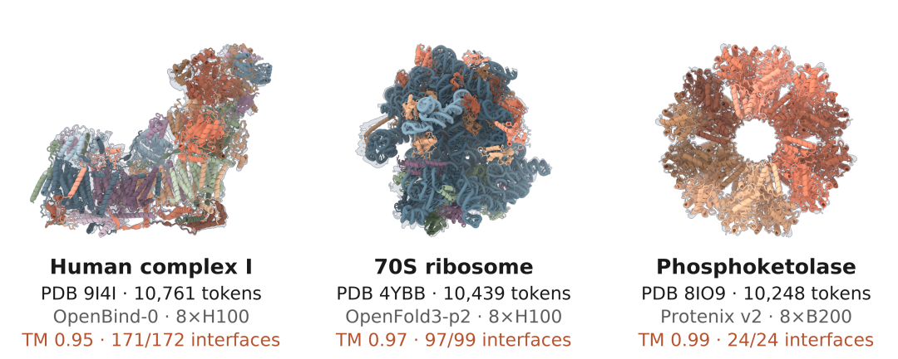
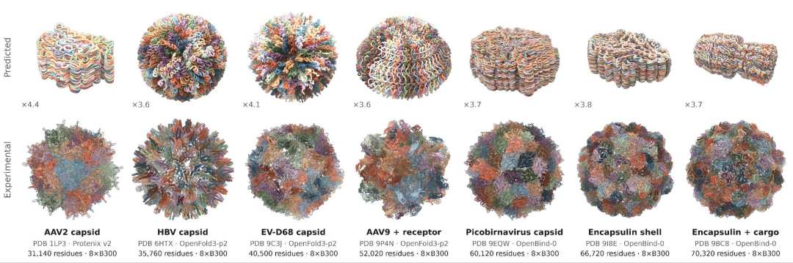
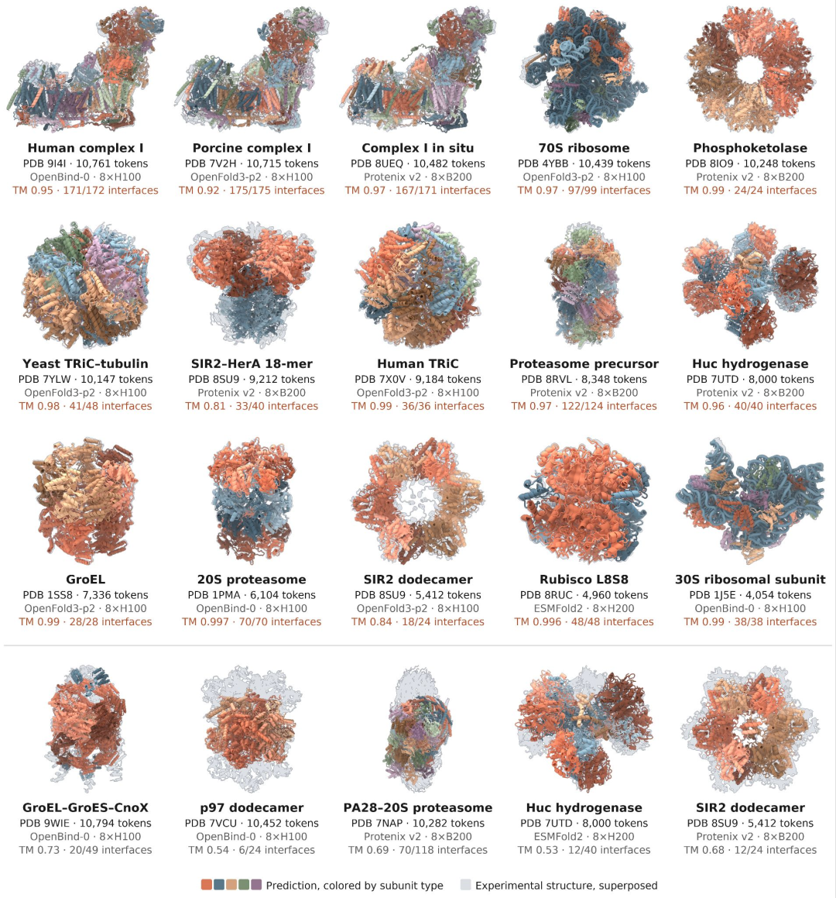

看 Anthropic 这篇报告，先看到的是一笔算力账。
他们此前让 Claude 编排开源蛋白设计工具做 de novo binder，每个靶点最多可以用到约 10,000 美元的 Modal 算力，折合约 2,500 个 H100 GPU 小时。这个规模可以做出很漂亮的计算结果，离日常项目仍有一段距离。多数团队不会为一个早期靶点这样烧预算。
这次的设置收紧了很多。一台 H200，一次 24 小时，一个 Claude 模型，没有子代理，也没有人持续干预设计。Anthropic 用 16 个靶点测试三种 Claude 模型，报告称，设计结果的 ipSAE 分数可以接近前一轮活动，GPU 和模型调用合在一起大约 150 美元。
这篇工作的价值落在计算基础设施上。Claude 没有训练一个新的结构预测模型，它去改了现有模型的推理路径，让它们跑得更快、更省显存。项目公开了 36 套优化包，覆盖 OpenFold3、Boltz-2、Chai-1、ProteinMPNN、RFdiffusion、BindCraft 等结构预测和蛋白设计工具。

图 1 的结论很直接，计算评分相近时，前端搜索和筛选所需的算力成本可以明显下降。
最花时间的地方，往往藏在三角运算里
结构预测模型里有一类很难绕开的计算，triangle attention 和 triangle multiplication。它们要在残基或 token 的两两关系上再看第三个点，用来表达分子内部的几何约束。代价也很实在，系统长度翻一倍，运行时间和显存大致会变成八倍。
Anthropic 让 Claude 围绕这两类算子写了 FlashPairformer 内核，再针对不同模型处理重复计算、无效分支和缓存。报告给出的结果是，结构预测工具的 fast 模式平均约快四倍。图里的 speed-up 要读清楚，它说的是前向推理速度，并不代表结构预测本身更准。

图 2 说明这类内核优化在较长输入上更有意义，尤其是 triangle attention 的加速会随长度上升。

图 3 说明加速并不局限于单一模型，hallucination、结构生成和 inverse folding 都能看到收益，幅度则随工具而变。
开源代码把模式分成 exact、fast 和 big。exact 保持和原始版本相同的输出，主要追求速度。fast 允许小的数值变化，换取更高吞吐。big 把峰值显存压到更低，为原本装不下的输入腾空间。
这三个模式给的选择很现实。做需要严格复现的基准比较时，exact 的意义最大，输出和原始版本一致，速度也会提升。前期大量筛选时，fast 更有吸引力，代价是接受小的数值差异。big 留给真正碰到显存上限的体系。三种模式对应的是三类计算任务，不能把它们压成一个简单的速度榜。

图 4 显示在这组复合物界面测试中，fast 和 big 模式的可接受界面比例与默认设置接近，性能损失没有拉开明显差距。

图 5 的汇总值更适合拿来判断量级，14 个模型里 exact 平均约 1.6 倍，fast 约 4.2 倍，big 约 3.5 倍。
这套代码离日常使用还有多远
我也翻了项目仓库。它提供的是一批针对固定上游版本的 inference optimization kits，每个工具单独配环境和优化层。运行时可以切回原始版本，也会明确打印当前启用的模式。这个设计比直接改一份别人环境里的源码稳妥得多，至少能把优化版和原始版放在同一套比较框架里。
部署成本仍然在。仓库写得很清楚，现阶段的代码是随报告发布的参考版本，Anthropic 不计划继续维护，也不接收贡献。各工具依赖固定的软件栈和 GPU 配置，研究组要把它接进已有 pipeline，还得自己处理环境、权重和后续版本变化。
这会决定它的近期价值。对已经在跑这些工具、又有 Linux 和 NVIDIA GPU 环境的团队，代码可以直接拿来评估。对只想点一下就加速的使用者，它还谈不上是一个随装随用的通用插件。开源很重要，工程化维护仍然需要有人接手。
big 模式打开了输入尺寸，没把模型的知识边界一起推开
这部分我觉得特别值得把话说完整。
作者用 big 模式在单个 NVIDIA GPU 节点上预测了超过 10,000 tokens 的大型分子机器，包括人线粒体复合物 I、70S 核糖体和 TRiC 等。这里的 token 包含氨基酸、核酸、小分子原子和离子。多个例子和实验结构吻合得相当好，图里列出的 TM-score 与界面恢复率也很高。

图 6 说明显存占用降下来以后，现有模型已经能在一个节点内处理一批以前很难跑完的大型复合物。
作者也继续把尺寸推到 31,000 到 70,000 tokens。推理能跑完，结构却塌掉了。

图 7 给出了一条很重要的边界，算得动不等于模型已经学会预测这个尺度的体系。

图 8 的上半部分是可接受的超大体系预测，下半部分的失败案例提醒我们，big 模式解决的是显存瓶颈，不负责补上训练分布之外的泛化能力。
放到 AIDD 里，我会怎么理解这件事
我更愿意把这件事看成 AI 开始参与模型工程。Claude 读代码、跑基准、改推理路径，再让专家检查结果。这个位置很有价值，因为蛋白设计项目里花掉的 GPU 时间，很多都消耗在大量候选的生成、复折叠、界面评估和反复筛选上。
速度翻四倍不会自动得到四倍多的有效 binder。它会先带来更多候选和更低的试错门槛。候选如何分层，哪些分数值得信，哪些序列要进入湿实验，这些决定依然决定项目最后的质量。计算更便宜以后，筛选标准更值得认真设计，否则只是更快地得到一批相似的候选。
这也是我读 binder 结果时最在意的一点。ipSAE 很适合放在计算设计的排序环节，它回答的是模型预计这个界面能否成立。它还没有回答表达量、可溶性、单体状态、稳定性、特异性和后续成药性。对抗体、多肽和蛋白 binder 项目来说，这些问题经常在计算评分之后才冒出来。
算力下降会改变实验前的候选池大小。原来预算只够跑少量构象和设计回合时，团队会更早把筛选阈值卡死。现在如果同一笔钱能多跑几倍设计，留给多样性、负设计和复核的空间会更大。这个变化很有用，前提是项目把多出来的预算花在更好的筛选上，而不是只堆高单一评分。
还有一处需要收住。本文 binder 部分报告的是 ipSAE 等计算指标，没有给出这轮 16 个靶点设计的湿实验结合数据。Anthropic 和 Adaptyv Bio 后续计划在公开竞赛中验证超过 5,000 个设计。那批实验数据出来后，才能更实在地看清成本下降是否也带来了实验成功率的变化。
我的判断是，Claude 这次把一批已经有人在用的模型跑得更顺。对需要多轮生成和筛选的 AIDD 项目，这种改动很容易折算成可跑的候选数、项目周期和算力预算。它离药物研发的终点还很远，离日常研发里的计算瓶颈已经近了一步。
来源
Anthropic 原文: https://www.anthropic.com/research/claude-uplifts-biomolecular-modeling Anthropic
开源优化代码 : https://github.com/anthropics/uplifting-biomolecular-modeling